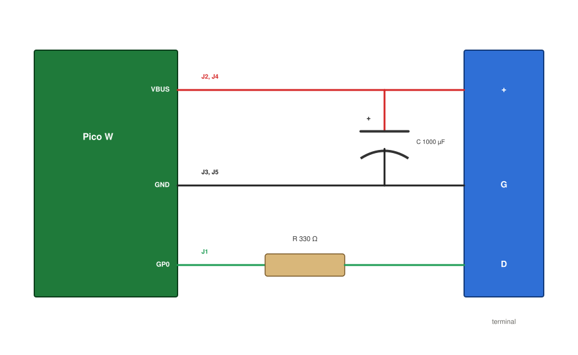
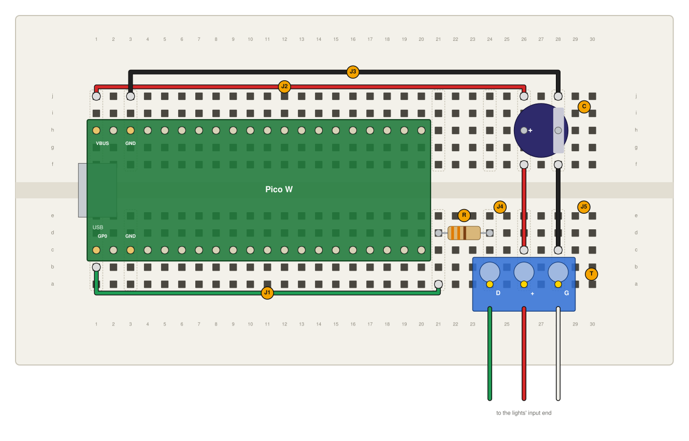

<title>Breadboard Test Circuit</title>
<meta name="claude:viewport-fit-sides" content="cover">
<link rel="stylesheet" href="https://fonts.googleapis.com/css2?family=IBM+Plex+Mono:wght@400;500&family=IBM+Plex+Sans+Condensed:wght@600&family=IBM+Plex+Sans:wght@400;600&display=swap">
<style>
/* Layout: one reading column; each step is a heading, a full-width board image, then the actions. */
:root {
  --bg: #f5f3ee; --surface: #ffffff; --fg: #1d1f1c; --muted: #5d625a; --line: #dcd8cd;
  --accent: #a35f00; --accent-soft: #fbeccf; --code-bg: #ecebe4;
  --font-body: "IBM Plex Sans", system-ui, -apple-system, "Segoe UI", sans-serif;
  --font-head: "IBM Plex Sans Condensed", "IBM Plex Sans", system-ui, sans-serif;
  --font-mono: "IBM Plex Mono", ui-monospace, Menlo, monospace;
}
@media (prefers-color-scheme: dark) { :root:not([data-theme="light"]) {
  --bg: #141613; --surface: #1c1f1b; --fg: #ecebe5; --muted: #a4a99f; --line: #33372f;
  --accent: #f4a300; --accent-soft: #3a2c10; --code-bg: #262a24; color-scheme: dark } }
:root[data-theme="dark"] {
  --bg: #141613; --surface: #1c1f1b; --fg: #ecebe5; --muted: #a4a99f; --line: #33372f;
  --accent: #f4a300; --accent-soft: #3a2c10; --code-bg: #262a24; color-scheme: dark }
body { background: var(--bg); color: var(--fg); font: 16px/1.6 var(--font-body); }
main { max-width: 820px; margin: 0 auto; padding-block: 28px 64px;
  padding-left: max(16px, env(safe-area-inset-left, 0px)); padding-right: max(16px, env(safe-area-inset-right, 0px)); }
h1, h2 { font-family: var(--font-head); text-wrap: balance; line-height: 1.2; }
h1 { font-size: 2rem; font-weight: 600; margin: 0 0 12px; }
h2 { font-size: 1.4rem; font-weight: 600; margin: 44px 0 10px; padding-top: 14px; border-top: 1px solid var(--line); }
h2:first-of-type { border-top: 0; }
p, li { max-width: 68ch; }
ul, ol { padding-left: 1.4em; }
li + li { margin-top: 4px; }
li > ul { margin-top: 4px; }
strong { font-weight: 600; }
em { font-style: normal; text-decoration: underline; text-decoration-color: var(--accent); text-underline-offset: 3px; }
hr { border: 0; height: 0; margin: 8px 0; }
code { font-family: var(--font-mono); font-size: 0.9em; background: var(--code-bg); padding: 1px 5px; border-radius: 4px; }
figure { margin: 14px 0 16px; background: #0f100e; border-radius: 10px; padding: 6px; overflow-x: auto; }
figure img { display: block; width: 100%; min-width: 560px; height: auto; }
.step-tag { display: inline-block; font-family: var(--font-mono); font-size: 0.78rem; letter-spacing: 0.04em;
  color: var(--accent); background: var(--accent-soft); border-radius: 999px; padding: 2px 10px; margin-bottom: 6px; }
.callout { background: var(--accent-soft); border-radius: 8px; padding: 10px 14px; margin: 12px 0; }
.callout p { margin: 0; }
.table-wrap { overflow-x: auto; margin: 12px 0; }
table { border-collapse: collapse; width: 100%; min-width: 440px; background: var(--surface); }
th, td { text-align: left; padding: 8px 10px; border-bottom: 1px solid var(--line); vertical-align: top; }
th { font-weight: 600; font-size: 0.9rem; color: var(--muted); }
a { color: var(--accent); }
:focus-visible { outline: 2px solid var(--accent); outline-offset: 2px; }
</style>
<main>
<h1>Tree lights circuit on a breadboard</h1>
<p>The same circuit as the ProtoMate board, built on a half-size breadboard (30 columns, rows a–e and f–j) with your second Pico. Use it to check the circuit and the lights work, and to compare against the soldered board.</p>
<h2>The circuit</h2>
<figure></figure>
<p>There are only three connections, plus a capacitor:</p>
<ul>
<li><strong>VBUS → +.</strong> The 5V from the USB socket powers the lights.</li>
<li><strong>GND → G.</strong> This is a shared ground. The data signal needs it to work.</li>
<li><strong>GP0 → 330 Ω resistor → D.</strong> This is the data signal. The resistor protects the first LED's input.</li>
<li><strong>1000 µF capacitor across + and G,</strong> with its + leg on the 5V side. It smooths the supply when the lights switch on.</li>
</ul>
<h2>How a breadboard is joined</h2>
<ul>
<li>In each column, holes <strong>a to e</strong> are joined, and holes <strong>f to j</strong> are joined. The two halves aren't joined across the middle gap.</li>
<li>Nothing is joined left to right. So in the drawing, each dashed outline is one group of joined holes.</li>
</ul>
<h2>Layout</h2>
<figure></figure>
<div class="table-wrap"><table>
<thead>
<tr>
<th>Part</th>
<th>From</th>
<th>To</th>
</tr>
</thead>
<tbody>
<tr>
<td><strong>Pico</strong></td>
<td>pins in rows <strong>c</strong> and <strong>h</strong>, columns <strong>1 to 20</strong>, USB end on the left</td>
<td></td>
</tr>
<tr>
<td><strong>J1</strong> data jumper (green)</td>
<td><strong>1b</strong> (GP0)</td>
<td><strong>21a</strong></td>
</tr>
<tr>
<td><strong>R</strong> 330 Ω resistor</td>
<td><strong>21d</strong></td>
<td><strong>24d</strong></td>
</tr>
<tr>
<td><strong>T</strong> screw terminal</td>
<td>legs in <strong>24a</strong>, <strong>26a</strong>, <strong>28a</strong> (D, +, G), openings facing the bottom edge</td>
<td></td>
</tr>
<tr>
<td><strong>J2</strong> 5V jumper (red)</td>
<td><strong>1j</strong> (VBUS)</td>
<td><strong>26j</strong></td>
</tr>
<tr>
<td><strong>J3</strong> ground jumper (black)</td>
<td><strong>3j</strong> (GND)</td>
<td><strong>28j</strong></td>
</tr>
<tr>
<td><strong>C</strong> 1000 µF capacitor</td>
<td><strong>+ leg in 26h</strong></td>
<td><strong>− leg (stripe) in 28h</strong></td>
</tr>
<tr>
<td><strong>J4</strong> 5V across the gap (red)</td>
<td><strong>26f</strong></td>
<td><strong>26c</strong></td>
</tr>
<tr>
<td><strong>J5</strong> ground across the gap (black)</td>
<td><strong>28f</strong></td>
<td><strong>28c</strong></td>
</tr>
</tbody>
</table></div>
<p>With the USB end on the left, the Pico's pins line up with the same labels as the ProtoMate: column 1 is <strong>GP0</strong> on the bottom row and <strong>VBUS</strong> on the top row, and column 3 is <strong>GND</strong> on both.</p>
<h2>Build it</h2>
<ol>
<li>Push the Pico in with its pins in rows <strong>c</strong> and <strong>h</strong>, USB end at column 1. That leaves two free holes beside every pin: <strong>a–b</strong> below and <strong>i–j</strong> above.</li>
<li>Fit the terminal (<strong>T</strong>) with its legs in row <strong>a</strong>, columns <strong>24, 26 and 28</strong>, so its openings face the bottom edge.</li>
<li>Fit the resistor (<strong>R</strong>) from <strong>21d</strong> to <strong>24d</strong>, then <strong>J1</strong> from <strong>1b</strong> to <strong>21a</strong>.</li>
<li>Fit <strong>J2</strong> (<strong>1j</strong> to <strong>26j</strong>) and <strong>J3</strong> (<strong>3j</strong> to <strong>28j</strong>).</li>
<li>Fit the capacitor (<strong>C</strong>): <strong>+</strong> in <strong>26h</strong>, stripe side in <strong>28h</strong>. Get the polarity right.</li>
<li>Fit <strong>J4</strong> (<strong>26f</strong> to <strong>26c</strong>) and <strong>J5</strong> (<strong>28f</strong> to <strong>28c</strong>). These carry 5V and ground across the gap to the terminal.</li>
<li>Connect the lights' <strong>input</strong> end: data to <strong>D</strong>, 5V to <strong>+</strong>, ground to <strong>G</strong>.</li>
</ol>
<h2>Keep the brightness low</h2>
<p>Breadboard contacts and thin jumpers are only good for about 1 A. At full brightness, the lights can draw up to about 1.75 A.</p>
<ul>
<li>Before you plug in, set the brightness to the lowest setting (20%) in the web app, or choose dim colours.</li>
<li>Unplug it if a jumper or the breadboard gets warm.</li>
</ul>
<p>The breadboard is for testing the logic, not for running the lights all evening.</p>
<h2>What the test tells you</h2>
<ul>
<li><strong>Lights work on the breadboard:</strong> the lights, their wiring order and the software are all fine. The fault is on the soldered board. Compare the two boards point by point with your multimeter:</li>
<li><strong>0</strong> pad → resistor → <strong>D</strong></li>
<li><strong>VB</strong> → <strong>+</strong></li>
<li><strong>G</strong> → <strong>G</strong></li>
<li><strong>Lights don't work on the breadboard either:</strong> the problem is with the lights or how they're connected. Check:</li>
<li>you're on the lights' <strong>input</strong> end (arrows, DIN or DI)</li>
<li>the order of data, 5V and ground</li>
<li>that the second Pico is running the program (open its web page)</li>
<li><strong>Swap the Picos.</strong> If one Pico works on the breadboard and the other doesn't, the Pico or its software is the problem.</li>
</ul>
<p>For the voltage checks, use the same readings as on the soldered board. Between <strong>+</strong> and <strong>G</strong> you should see about 5 V. Between <strong>GP0</strong> or <strong>D</strong> and ground, you should see a flickering 0.3–1.5 V while the lights animate.</p>
</main>
